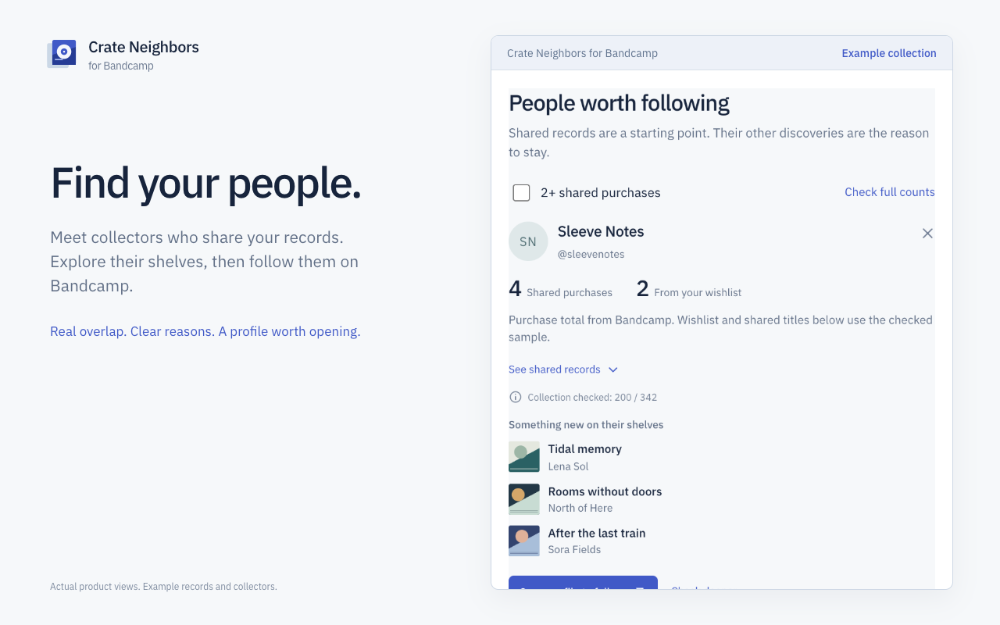

Find people worth following
See shared purchases and wishlist matches. Inspect the evidence, filter for two or more shared purchases, and open the collector’s profile on the music platform.
Free Chrome extension for music discovery
Compare your purchases and wishlist with collectors. Find people who share your taste, then explore music you haven’t found yet.
Free, with processing in your browser. Chrome 120+.
Install the current release from GitHub as an unpacked extension. A Chrome Web Store listing is not available yet.

Start with your shelves
Favorite records lead to their collectors. Their collections lead somewhere new.
See shared purchases and wishlist matches. Inspect the evidence, filter for two or more shared purchases, and open the collector’s profile on the music platform.
Explore music from matching collections. Duplicates, your purchases and your wishlist are excluded from new discoveries.
Pause the queue and return later. Check deeper, hide unwanted results, and keep your progress between browser sessions.
From a record to a collection
The extension works beside Bandcamp in a Chrome side panel. Listening, buying and following remain on the original pages.
Load your purchases, wishlist and followed collectors.
Use the suggested starting records, pick your own, or add the album open in your tab.
Scan those records’ supporters, see matches and open discoveries as they arrive.

Know what the numbers mean
A full purchase count is used when Bandcamp confirms it for your signed-in profile. Shared titles and wishlist matches come from the sample checked so far.
When a full count isn’t available, ≥ 1 means “at least one found”. The panel shows how much of the collection has been examined.
Searching starts with supporters of selected releases. It does not claim to compare every account on the platform.
Your browser does the work
No developer backend, analytics, subscription or separate extension account. Requests go directly to Bandcamp, with artwork from its CDN.
Collections, results and the queue are saved locally. Your existing browser session can be used without asking for your password.
Read the privacy policyYes. There is no subscription, license key or paid daily scan limit. Requests are paced to respect the platform’s server limits.
Download the ZIP from GitHub Releases, unzip it, open chrome://extensions, enable Developer mode and choose Load unpacked. Select the folder containing manifest.json. Keep that folder in place.
Version 0.1.1 supports bandcamp.com and its subdomains. Shops on separate custom domains are not supported. Private, removed or unavailable data can be skipped.
Read the queue’s reason. Wait for a cooldown, or open the music platform to complete a browser check, then resume. Your progress is saved.
Read the support guide or open a GitHub issue. English and Russian are welcome.
Crate Neighbors for Bandcamp · Chrome 120+ · English and Russian.